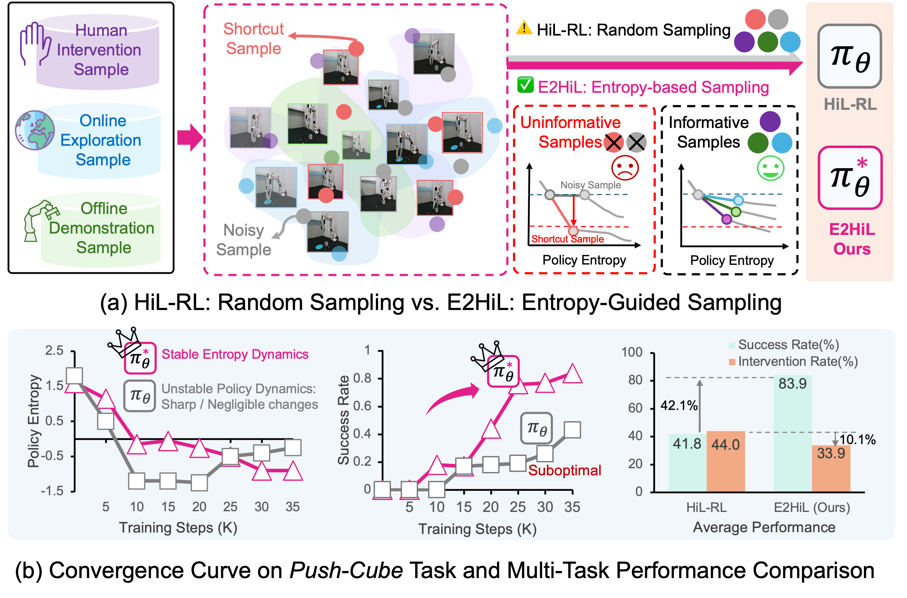
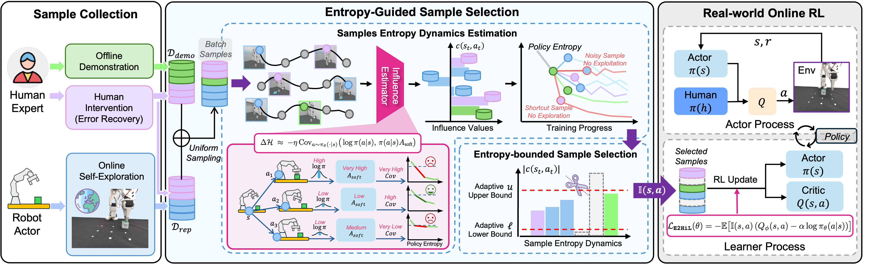

Entropy-Guided Sample Selection for Efficient Real-World Human-in-the-Loop Reinforcement Learning
A sample-efficient real-world human-in-the-loop RL framework that actively selects informative samples through entropy-guided influence functions — achieving higher success while requiring far fewer human interventions.

Human-in-the-loop guidance has emerged as an effective approach for enabling faster convergence in online reinforcement learning (RL) of complex real-world manipulation tasks. However, existing human-in-the-loop RL (HiL-RL) frameworks often suffer from low sample efficiency, requiring substantial human interventions to achieve convergence and thereby leading to high labor costs.
To address this, we propose a sample-efficient real-world human-in-the-loop RL framework named E2HiL, which requires fewer human intervention by actively selecting informative samples. Specifically, stable reduction of policy entropy enables improved trade-off between exploration and exploitation with higher sample efficiency. We first build influence functions of different samples on the policy entropy, which is efficiently estimated by the covariance of action probabilities and soft advantages of policies. Then we select samples with moderate values of influence functions, where shortcut samples that induce sharp entropy drops and noisy samples with negligible effect are pruned.
Extensive experiments on four real-world manipulation tasks demonstrate that E2HiL achieves a 42.1% higher success rate while requiring 10.1% fewer human interventions compared to the state-of-the-art HiL-RL method, validating its effectiveness.
A walkthrough of E2HiL and its entropy-guided sample selection on real-world manipulation tasks.
E2HiL characterizes the entropy dynamics induced by each sample and prunes the extremes — keeping the informative middle so that policy entropy decreases stably and the policy converges with fewer human corrections.
We characterize the entropy dynamics induced by each sample through influence functions on the policy entropy, efficiently estimated by the covariance of action probabilities and soft advantages of the policy — no expensive re-training required.
We keep samples with moderate influence and prune the extremes: shortcut samples that trigger sharp entropy drops and noisy samples with negligible effect, constraining the influence value within dynamic bounds for stable entropy reduction.

Performed on a tabletop setup with objects randomized in location every episode. E2HiL learns four complex real-world manipulation tasks with an average training time of only about one hour.
We further evaluate E2HiL on the A1_X platform across a new task set — spanning object picking, contact-rich insertion, deformable folding, surface wiping, and articulated toaster interaction.
@article{deng2026e2hil,
title = {E2HiL: Entropy-Guided Sample Selection for Efficient
Real-World Human-in-the-Loop Reinforcement Learning},
author = {Deng, Haoyuan and Lin, Yudong and Xue, Yuanjiang and
Du, Haoyang and Wang, Qianzhun and Zhou, Boyang and
Wu, Zhenyu and Wang, Ziwei},
journal = {IEEE Robotics and Automation Letters},
volume = {11},
number = {7},
pages = {8084--8091},
year = {2026},
doi = {10.1109/LRA.2026.3693577}
}